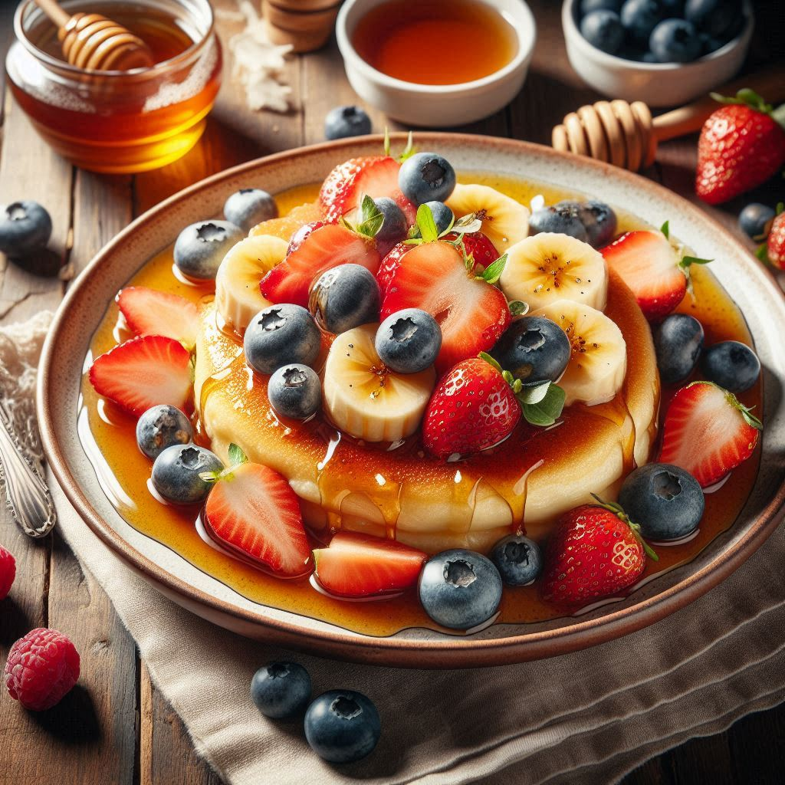

RACUCHY Recipe

Description
Also known as Polish apple pancakes.
Delightful, fluffy treats often enjoyed for dinner.
Ingredients:
- 2 large apples (peeled, cored, and grated or finely chopped)
- 1 cup all-purpose flour
- 2 tablespoons sugar
- 1 teaspoon baking powder
- 1/4 teaspoon salt
- 1/2 teaspoon cinnamon (optional)
- 2 large eggs
- 1/2 cup milk
- 1 teaspoon vanilla extract
- Vegetable oil for frying
- Powdered sugar for dusting (optional)
Instrucions:
- Prepare the Batter – In a large bowl, whisk together the flour, sugar, baking powder, salt, and cinnamon (if using).
In another bowl, beat the eggs and then mix in the milk and vanilla extract.
Gradually add the wet ingredients to the dry ingredients, stirring until just combined. Do not overmix.
- Add the Apples – Gently fold the grated or finely chopped apples into the batter until evenly distributed.
- Heat the Oil – In a large skillet, heat about 1/4 inch of vegetable oil over medium heat until it shimmers.
- Fry the Racuchy – Drop spoonfuls of the batter into the hot oil, flattening them slightly with the back of the spoon to form small pancakes.
Fry until golden brown on both sides, about 2-3 minutes per side. Adjust the heat as needed to prevent burning.
Transfer the racuchy to a paper towel-lined plate to drain any excess oil.
- Serve – Serve the racuchy warm, dusted with powdered sugar if desired.